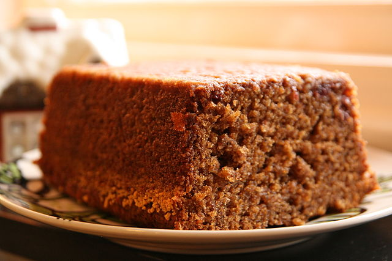

Ginger Loaf

Description
This spiced loaf is a winter treat that is perfect for the holiday season.
Serve warm with whipped cream or vanilla ice cream
As with any homemade cake, cooking times will vary slightly as domestic ovens are not always the most temperature accurate.
Cooking times will also vary depending on the thickness and dimensions of your loaf tin.
Cook until a cake tester or wooden skewer can be inserted into the centre of the loaf and come out clean.
Ingredients
- 60g butter
- 115g golden syrup
- 125g milk
- 1/2tsp vanilla paste
- 1 egg yolk
- 60g brown sugar
- 110g flour
- 1tsp baking powder
- 1/2tsp baking soda
- 1/2tsp ground ginger
- 1/2tsp cinnamon
Steps
- Preheat oven to 170 Celsius
- Spray a loaf pan with cooking spray and line with baking paper
- Melt together the butter and golden syrup (this can be done either on the stovetop or in the microwave)
- Once the butter is melted, whisk in the milk and vanilla
- When the ingredients are well mixed, whisk in the egg yolk
- Whisk in the brown sugar, followed by the remaining ingredients
- Pour the mixture into your lined loaf tin and bake for approximately 25 minutes